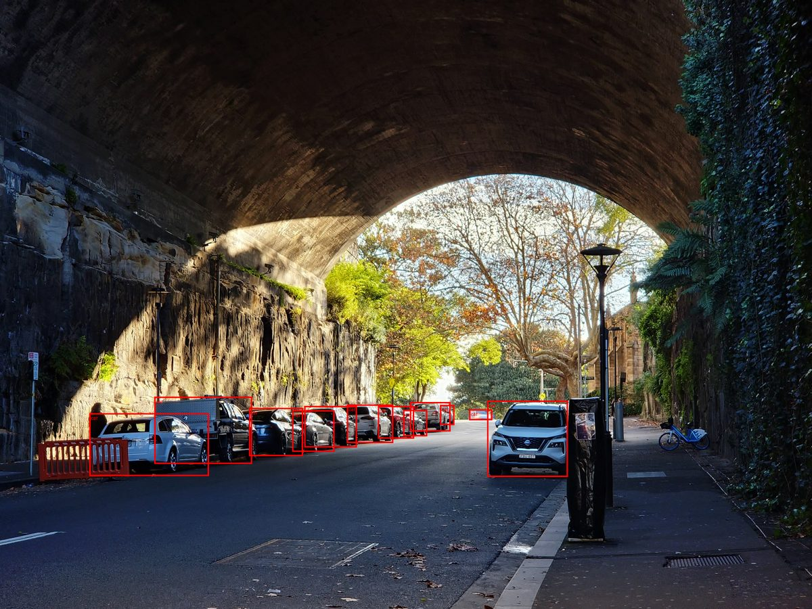

Introduction
Think about how a photo gets ready before it's printed or posted online:
- It gets cropped to fit the frame.
- It's resized to the right dimensions.
- Maybe it's brightened up a little.
Before an AI model can look at a photo and say "that's a flower," it goes through a similar prep process. The photo gets:
- Resized.
- Cropped.
- Turned into a grid of numbers the model can actually read.
- Rescaled, so those numbers fall in a consistent range.
To teach a model to learn to see flowers, showing the same flowers can lead to:
- Memorizing those specific photos instead of learning features
- Difficulty in identifying new photos even if the angle / bridghtness is changed slightly
So to make the model learn to see flowers, each photo also gets randomly flipped, rotated, or recolored a little differently every time it's shown. This trick is called augmentation. It forces the model to learn the idea of "flower", and focus on the underlying features that make up a flower
This whole sequence of steps is an image processing pipeline. Nearly every large image AI you've used like ChatGPT, Nano Banana, Midjourney is built on a pipeline just like this one. This is made possible by one very cool library called TorchVision.
What You Will Learn
In this article, you will learn about the TorchVision library and the set of tools that it offers that make up the image processing pipeline. It offers:
- Transforms: to prepare and randomize your images
- Datasets: to load and test with image data
- Models: pretrained networks for classification, detection, and segmentation
- Utils: utilities to visualize the results
Let's get to it!
What Is TorchVision?
Deep learning for computer vision comes with a lot of hidden work — loading images, augmenting them, normalizing them, batching them, defining models, and visually debugging all of it. Writing that from scratch is slow, error-prone, and a pain to maintain.
TorchVision packages all of it into one library instead. Using it gives you:
- Consistency — it plugs straight into PyTorch's components like
DatasetandDataLoader. - Efficiency — many transforms are optimized in C or TorchScript, not plain Python.
- Reliability — standardized code means fewer bugs and results you can reproduce.
That lets you spend your time on your own computer vision problem, instead of reinventing tools that already exist. TorchVision provides those tools in four key areas:
Transforms
Reshape, rescale, and randomize images (Resize, CenterCrop,
ToTensor, Normalize, and the Random* family).
Utility Functions
The visual bookkeeping: make_grid, save_image,
draw_bounding_boxes, draw_segmentation_masks.
Datasets
Ready-made sets like CIFAR-10 and EMNIST, your own folders via ImageFolder, and
FakeData for debugging.
Models
Pretrained networks for classification, detection, and segmentation.
The sections below work through the transforms, the utilities, and the datasets:
Setting up the Environment
We'll take this flower image as an example to walk through the transformations. Upload your own image to see it live with your own image.
from PIL import Image # For Image I/O
import torch
from torchvision import transforms
torch.manual_seed(42) # Helps with reproducibility
img = Image.open("flower-1.jpg") # PIL image · H × W × C
H, W = img.height, img.width # PIL gives channels-last size
C = len(img.getbands()) # e.g. 3 for RGB
print(f"Image Size: {H} x {W} x {C}")Image As A Tensor
TorchVision's transforms module is built around five core functions — ToTensor(),
ToPILImage(), Resize(), CenterCrop(), and Normalize().
The first two helps you convert an image to a tensor and back
ToTensor()— converts an image from PIL (Pillow) format into a PyTorch tensor, scaling pixel values from the 0–255 range down to 0–1 — which helps stabilize training by keeping inputs consistent. The resulting tensor is in CHW format (channels, height, width), unlike NumPy and PIL, which use HWC format (Height, Width, Channels)ToPILImage()— converts a tensor back into a PIL image. The image comes back unchanged, with no deterioration — a 2048×2048 image stays 2048×2048.
Hover the image below to see a pixel's raw values before and after that conversion.
# ToTensor(): PIL → tensor · uint8 [0,255] HWC → float32 [0,1] CHW
tensor = transforms.ToTensor()(out)
# ToPILImage(): the exact inverse — tensor → PIL, back to the original image
back = transforms.ToPILImage()(tensor)Basic Preprocessing Steps
Preprocessing involes resizing, cropping and normalizing images before they are fed into a model. TorchVision provides three core transforms for this purpose:
Resize()— adjusts the input image to a specific size, ensuring consistent input dimensions. If the image isn't square, the smaller edge is resized first and the other edge is proportionally resized. Reducing resolution (e.g., to 50×50) makes the image look pixelated.CenterCrop()— captures the image's central portion after resizing and removes irrelevant edges. BothResize()andCenterCrop()take the desired output size as an argument.Normalize()— after pixel values are in the 0–1 range, channels are normalized to have a mean of 0 and a standard deviation of 1, by subtracting the mean and dividing by the standard deviation for each channel — essentially computing the z-score.
transform = transforms.Resize(224)What's interpolation mode? When you resize an image, most of the new pixels
don't exist yet — the computer has to guess their color from the pixels around them. That guessing
rule is the interpolation mode. nearest just copies the closest original pixel:
fast, but blocky. bilinear blends the 4 nearest original pixels together: slower, but
smooth. Flip the toggle above and watch the difference.
transform = transforms.Compose([
transforms.Resize(256),
transforms.CenterCrop(224),
])Use it when validation and inference need deterministic framing — the classic pair is
Resize(256) then CenterCrop(224), keeping the central portion at a fixed size.
Limitations: the crop discards edges unconditionally — usually background,
sometimes your subject. Shrink it until you start losing things you care about; that is your boundary. It
has
no randomness, so it does not augment: for training variety, reach for
RandomResizedCrop in station 03.
transform = transforms.Compose([
transforms.ToTensor(), # Normalize needs a tensor first
transforms.Normalize(mean=[0.485, 0.456, 0.406],
std=[0.229, 0.224, 0.225]),
])Use it when feeding a pretrained backbone — use the ImageNet statistics it was trained with — or training from scratch, where you compute mean and std from your own data. Normalize is a per-channel z-score: subtract the mean, divide by the std. The histograms are the honest view — same shapes, recentred at 0 with σ≈1.
Limitations: the output is no longer an image. It has negative values, so it cannot be displayed or saved without undoing the operation — the preview above is min-max rescaled and labelled as such. Wrong statistics do not raise an error; they silently shift every input off the distribution the backbone learned. That failure mode is invisible until accuracy tells you.
Randomizing Images For Training
A small dataset is the usual reason to augment: each random variation is effectively a new
training
sample, teaching the model that the label survives the change. The Random* transforms roll fresh
dice
on every call — here the dice are a seed you control, the same trick as torch.manual_seed().
Same seed, same "random" result.
torch.manual_seed(7)
transform = transforms.ColorJitter(brightness=0.4, contrast=0.4, saturation=0.4)Note: Color can sometimes be label information for some tasks — species identified by hue, ripeness, medical staining — and jitter can erase exactly what the model needs to learn. Visualizing it like a grid can help you understand the extremity of such transformations before training your model
torch.manual_seed(7)
transform = transforms.RandomHorizontalFlip(p=0.5)Use it when orientation does not define the object — true for most natural photos.
Default p=0.5: half of all samples get mirrored.
Limitations: when orientation is semantic — digits, text, road signs —
a flip manufactures a wrongly-labelled sample. And p is a per-sample probability, not a
guarantee: at p=0.5, a run of six unflipped draws is unlikely but legal, as the seed control will show
you.
torch.manual_seed(7)
transform = transforms.RandomResizedCrop(224, scale=(0.30, 1.0))Use it when you want scale and translation invariance — this is the standard ImageNet training crop. It samples a random area (between scale min and 100%, at a random aspect ratio 3/4–4/3) and resizes it to the output size, using TorchVision's exact 10-attempt sampling logic.
Limitations: at a low scale minimum, crops can miss the subject entirely — push it to 0.08 and watch subject-free tiles appear. Each one is a mislabelled training sample. The outlines on the original show you precisely which regions the sampler chose; that is the boundary you are here to find.
Writing Your Own Transform
If you want to implement your custom tranforms, TorchVision allows it. It only requires the function you write is callable. The classic example: salt-and-pepper noise, random white and black pixels simulating a grainy sensor.
class SaltAndPepperNoise:
def __init__(self, ratio=0.5, amount=0.05): # parameters live here
self.ratio, self.amount = ratio, amount
def __call__(self, img): # the operation lives here
arr = np.array(img)
n = int(arr.shape[0] * arr.shape[1] * self.amount)
ys, xs = np.random.randint(0, arr.shape[0], n), np.random.randint(0, arr.shape[1], n)
arr[ys, xs] = np.where(np.random.rand(n, 1) < self.ratio, 255, 0)
return Image.fromarray(arr)
transform = SaltAndPepperNoise(ratio=0.5, amount=0.050)Chaining Multiple Transforms
Compose() combines multiple transforms into a single preprocessing pipeline defined as a list
of operations applied in sequence. Any image passed through will come out the correct size, format, and scale. Because everything is defined in one place, it's easy to reuse and maintain
consistency across datasets.
When you pass a pipeline to a TorchVision dataset, the transformation is automatically applied to every image entering a batch.
Process — a typical preprocessing pipeline:
Resize()the image.CenterCrop().ToTensor().Normalize()using the ImageNet mean and standard deviations.
Pipelines built with Compose() help solve a common challenge: a small dataset. Even
with a good architecture, limited data may be too little to train effectively. One solution is to create
variations of each image — color jitter, rotation, noise, random crops, random resizing. This is
image augmentation: each new version effectively becomes a new sample, increasing data size and
variety without collecting new data.
Common random transformations include:
RandomResizedCrop()— randomly crops and resizes different parts of the image (e.g., to 224×224), encouraging the model to focus on all object areas, not just the center.RandomHorizontalFlip()— randomly flips images horizontally (default probability 0.5), helping the model learn that objects can appear in either direction.ColorJitter()— randomly adjusts brightness, contrast, and saturation (e.g., by a factor randomly selected between 0 and 0.5) to make the model more resilient to lighting variations.
After applying random transforms, convert images to tensors and then normalize.
The cards below are those stages in order — follow the arrows. Drag a card to reorder it, press
× to remove it, and add more from the tray. If you put, Normalize() before ToTensor()
and
you would get an error.
Using make_grid to Visualize multiple transformations at once and save_image() exports tensors back into image file formats like JPEG or PNG.
from torchvision.utils import make_grid, save_image
batch = torch.stack([transform(img) for _ in range(6)])
grid = make_grid(batch, nrow=3, padding=4, normalize=True)
save_image(grid, "contact_sheet.png")Drawing Boxes On An Image
Bounding boxes are a key output of object detection models, indicating the locations and categories of objects. Visualizing them helps you understand and validate predictions
Process — drawing boxes manually:
- Import the utilities module (contains
draw_bounding_boxes). - Create bounding boxes with coordinates
x1, y1, x2, y2, defined as a tensor (hard-coded here). - Define corresponding labels.
- Call
draw_bounding_boxeswith the image tensor, box coordinates, and labels → a new tensor containing the annotated image.
Note: coordinates here are absolute pixels to demonstrate that torchvision allows you to create simple boxes. You can play with it by dragging the corner dots to resize the boxes and edit the labels
Using A Model To Draw Bounding Boxes
The boxes in the previous station were hand-placed. In practice the coordinates come from a detection
model, and draw_bounding_boxes paints them exactly the same way.
Process — drawing boxes from a pretrained model:
- Use Faster R-CNN with a ResNet50-FPN backbone — Faster R-CNN for region proposal and classification, ResNet50 for feature extraction, and a feature pyramid network to detect objects at multiple scales. It's pre-trained on COCO (detects a wide range of common objects).
- Load the model and set it to evaluation mode.
- Check which classes it can detect — per the documentation, 90 object categories plus a background class (10 are labeled NA); "car" and "traffic light" are included. A helper function reads the metadata to retrieve categories.
- Load the image; specify target classes (e.g., "car", "traffic light") and box colors (red for cars, blue for traffic lights).
- Define
detect_and_draw_bboxes(), which converts the image to a tensor, runs it through the model, and retrieves predictions with box coordinates, class labels, and confidence scores. - Filter predictions to those matching the target classes above a confidence threshold; overlay the filtered
boxes with
draw_bounding_boxes, customizing line color and thickness. Return the annotated tensor (or the original image if nothing was detected above threshold). - Call
detect_and_draw_bboxes()with the model, image path, target category indices, box colors, and a confidence threshold of 0.7.
# Load a pre-trained object detection model and set to evaluation mode
bb_model_weights = tv_models.detection.FasterRCNN_ResNet50_FPN_Weights.DEFAULT
bb_model = tv_models.detection.fasterrcnn_resnet50_fpn(weights=bb_model_weights).eval()
# Use the helper function to inspect the weights object of the object detection model.
num_classes, classes = get_model_classes_from_weights_meta(
model=bb_model,
weights_obj=bb_model_weights
)# Define a list of target classes to detect
target_class_names = ['car', 'traffic light']
# Define a corresponding list of colors for each class's bounding box
bbox_colors = ['red', 'blue']
# Use a list comprehension to get a list of all target indices
object_indices = [classes.index(name) for name in target_class_names]def detect_and_draw_bboxes(model, image_path, object_indices, labels, bbox_colors,
threshold, bbox_width=3):
# Open and transform the image, and prepare the result tensor
pil_image = Image.open(image_path).convert("RGB")
transform_to_tensor = transforms.Compose([transforms.ToTensor()])
tensor_image_batch = transform_to_tensor(pil_image).unsqueeze(0)
result_image_tensor = (tensor_image_batch.squeeze(0) * 255).byte()
# Perform inference to get predictions for all possible objects
with torch.no_grad():
prediction = model(tensor_image_batch)[0]
# Initialize lists to collect all boxes, labels, and colors that meet the criteria
all_boxes_to_draw = []
all_labels_to_draw = []
all_colors_to_draw = []
# Loop through each target class to find its boxes
for index, label, color in zip(object_indices, labels, bbox_colors):
# Filter predictions for the current class index and confidence threshold
class_mask = (prediction['labels'] == index) & (prediction['scores'] > threshold)
# Get the boxes for the current class
boxes_for_this_class = prediction['boxes'][class_mask]
if boxes_for_this_class.nelement() > 0:
# Add the found boxes to our master list
all_boxes_to_draw.extend(boxes_for_this_class.tolist())
# Create and add corresponding labels and colors
all_labels_to_draw.extend([label] * len(boxes_for_this_class))
all_colors_to_draw.extend([color] * len(boxes_for_this_class))
# After checking all classes, draw all collected boxes at once if any were found
if all_boxes_to_draw:
result_image_tensor = vutils.draw_bounding_boxes(
result_image_tensor,
torch.tensor(all_boxes_to_draw),
labels=all_labels_to_draw,
colors=all_colors_to_draw,
width=bbox_width
)
else:
# If the list of boxes to draw is empty, print this information.
print(f"No objects from the list {labels} were found with a confidence score above {threshold}.\n")
return result_image_tensorconfidence_threshold = 0.7
# Execute the main detection function
result_image_tensor = detect_and_draw_bboxes(
model=bb_model, # The pre-trained object detection model.
image_path=image_path, # The path to the input image.
object_indices=object_indices, # The list of integer indices for the target classes.
labels=target_class_names, # The list of string names for the box labels.
bbox_colors=bbox_colors, # The list of colors for the bounding boxes.
threshold=confidence_threshold, # The minimum confidence score for a detection.
)
detect_and_draw_bboxes() — Faster R-CNN R50-FPN, COCO weights, threshold 0.70: 12 boxes for car, none for traffic light (there are none in frame)Use FakeData To Test Or Debug
- Three ways TorchVision helps with data:
- Pre-built datasets — come with labels, formatted to integrate into PyTorch's training pipeline directly. Enable training and comparison against established benchmarks (MNIST, ImageNet), faster deployment, and testing/debugging of models and pipelines.
- Custom datasets — the most common application; TorchVision offers strong support for loading, pre-processing, and augmenting your own data.
- Fake (synthetic) datasets — quickly generated to debug pipelines and ensure the data shape stays consistent for your architecture.
FakeData— generates random images and labels mimicking a real dataset's shape and size. Ideal for testing without worrying about data availability — e.g., confirming your images are the right size for your model.
from torchvision.datasets import FakeData
ds = FakeData(size=8, image_size=(3, 32, 32), transform=transforms.ToTensor())To Summarize
- 01 Tools
-
02
Preprocessing &
Augmentation - 03 Datasets
-
04
Pretrained Models
& Transfer Learning - 05 Visualization
- Overview of TorchVision tools — datasets, model architectures, transforms, and visualization tools.
- Preprocessing pipelines, including data augmentation — normalizing images, applying augmentations, and implementing custom transforms integrated directly into the training loop.
- Working with built-in and custom datasets — structuring data for seamless integration
with PyTorch's
DataLoader. - Pretrained models: inference and transfer learning — loading models, performing inference, and adapting them to new tasks (examples from ResNet and MobileNet).
- Visualization utilities: bounding boxes and segmentation — overlaying boxes or masks to interpret and debug model behavior.
- Together, these tools let you build, train, evaluate, and inspect computer vision models with enhanced clarity and efficiency